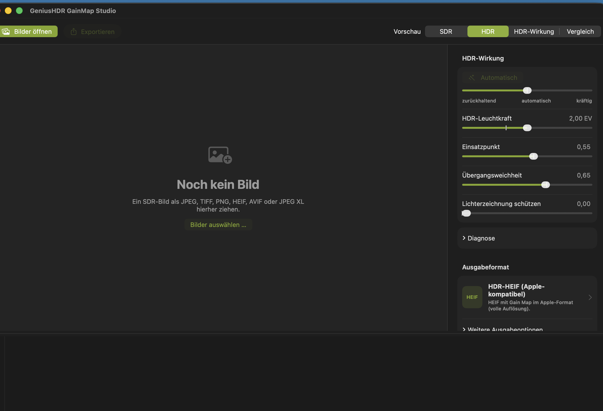

Über dieses Handbuch
Dieses Handbuch erklärt die Arbeit mit GeniusHDR GainMap Studio – vom Öffnen eines entwickelten SDR-Bildes über die Gestaltung der HDR-Wirkung bis zum Export als Bild mit HDR-Gain-Map. Es richtet sich an Fotografinnen und Fotografen, die ihre fertige SDR-Entwicklung um eine kontrollierte HDR-Darstellung ergänzen möchten.
Die Bezeichnungen entsprechen der deutschen Benutzeroberfläche der Version 1.0. Kleine Änderungen der Oberfläche können in späteren Versionen auftreten.
Über GeniusHDR GainMap Studio

GeniusHDR GainMap Studio 1.0
GeniusHDR GainMap Studio erzeugt aus einem entwickelten SDR-Bild eine HDR-Zielfassung und speichert die Differenz als Gain Map. Unterstützende Programme und Displays können daraus eine HDR-Darstellung rekonstruieren. Andere Programme zeigen weiterhin das eingebettete SDR-Grundbild.
Die App bietet Apple-kompatible HDR-JPEG- und HDR-HEIF-Ausgaben, standardisierte HDR-JPEG- und HDR-HEIF-Ausgaben nach ISO 21496-1 sowie ein gewöhnliches SDR-JPEG. Motivautomatik, manuelle Regler, Vorschau und Diagnose helfen dabei, die Wirkung kontrolliert einzustellen.
Was eine Gain Map ist
Eine Gain Map ist ein zusätzliches Bild im Ausgabedokument. Sie beschreibt, wie stark einzelne Bildbereiche für die HDR-Darstellung gegenüber dem SDR-Grundbild angehoben werden. Sie ist weder ein zweites vollständiges Foto noch eine einfache Helligkeitsmaske.
Das SDR-Grundbild bleibt die kompatible Darstellung. Ein geeignetes Wiedergabesystem kombiniert es mit Gain Map und Metadaten entsprechend der verfügbaren HDR-Leuchtkraft des Displays.
Wichtig: Die Ansicht HDR-Wirkung ist eine verständliche Hilfsdarstellung der Helligkeitsanhebung. Sie zeigt nicht die in der exportierten Datei gespeicherte Gain Map.
Voraussetzungen für die HDR-Anzeige
GeniusHDR GainMap Studio benötigt macOS 26 oder neuer. Damit die HDR-Wirkung sichtbar wird, sind außerdem ein HDR- beziehungsweise EDR-fähiges Display und eine Anwendung erforderlich, die das jeweilige Gain-Map-Format auswertet.
Besonders geeignet sind Apples XDR-Displays, beispielsweise:
- integrierte Liquid Retina XDR Displays geeigneter MacBook-Pro-Modelle,
- Apple Pro Display XDR.
Auch kompatible HDR-Displays anderer Hersteller können die HDR-Wirkung darstellen. Die tatsächlich erreichbare Helligkeit und der sichtbare Dynamikumfang hängen vom Display, der Verbindung, den macOS-Displayeinstellungen und der verwendeten Anwendung ab.
Auf einem SDR-Display oder in einer Anwendung ohne Gain-Map-Unterstützung erscheint lediglich das SDR-Grundbild. Das ist beabsichtigt und bedeutet nicht, dass HDR-Daten verloren gegangen sind.
Wichtige Begriffe
| Begriff | Bedeutung |
|---|---|
| SDR-Ausgangsbild | Das geöffnete, entwickelte Bild und kompatible Grundbild der HDR-Datei. |
| HDR-Zielfassung | Die von GeniusHDR berechnete Fassung mit erweitertem Helligkeitsumfang. |
| Gain Map | Zusatzbild, das die lokale Verstärkung vom SDR-Grundbild zur HDR-Darstellung beschreibt. |
| EDR | Apples Extended Dynamic Range für HDR-Ausgabe auf geeigneten Displays. |
| EV | Lichtwertstufe. +1 EV entspricht einer Verdopplung der relativen Helligkeit. |
| Headroom | Verfügbarer Helligkeitsspielraum oberhalb des SDR-Referenzweiß. |
| Encoder | Komponente, die Grundbild, Gain Map und Metadaten in die Ausgabedatei schreibt. |
Unterstützte Eingabedateien
GeniusHDR GainMap Studio unterstützt entwickelte SDR-Bilder in folgenden Formaten:
- JPEG
- TIFF
- PNG
- HEIC und HEIF
- AVIF
- JPEG XL
Bereits HDR-codierte Bilder oder Dateien mit vorhandener HDR-Gain-Map werden nicht als neue SDR-Quelle bearbeitet. So verhindert die App eine unbeabsichtigte zweite HDR-Verstärkung.
Kamera-RAW-Dateien werden nicht direkt unterstützt. Entwickle RAW-Dateien zuerst in einer RAW-Software und übergib das Ergebnis anschließend in einem unterstützten SDR-Bildformat.
WebP, OpenEXR, Radiance HDR und PIC sind in Version 1.0 keine unterstützten Eingabeformate.
Farbmanagement
GeniusHDR berücksichtigt eingebettete ICC-Farbprofile des Ausgangsbildes. Dazu gehören unter anderem sRGB, Display P3, Adobe RGB (1998), ProPhoto beziehungsweise ROMM RGB und DxO WideGamut RGB. Das Profil wird beim Import nicht einfach durch einen anderen Farbraum ersetzt, sondern dient zur korrekten Interpretation der Bildfarben.
Beim Export werden die Farben farbmetrisch in den Zielfarbraum umgerechnet: HDR-Ausgaben verwenden Display P3, Standard-JPEG (SDR) verwendet sRGB. Enthält eine Quelldatei kein eingebettetes ICC-Profil, nimmt GeniusHDR sRGB als Quellfarbraum an.
Dadurch können beispielsweise Wide-Gamut-TIFFs aus einer Bildbearbeitung direkt als Quelle verwendet werden. Eine vorherige manuelle Konvertierung nach sRGB oder Display P3 ist nicht erforderlich, sofern das verwendete Quellprofil korrekt in der Datei eingebettet ist.
Bilder über den Finder öffnen
Klicke in der Werkzeugleiste auf Bilder öffnen oder in der leeren Arbeitsfläche auf Bilder auswählen …. Wähle eine oder mehrere unterstützte Dateien und bestätige mit Importieren.
Dateien, die bereits bei der Vorprüfung eindeutig als ungeeignet erkannt werden, können im Auswahldialog deaktiviert sein. Spätestens beim Import prüft GeniusHDR vollständig, ob eine Datei bereits HDR-Informationen oder eine eingebettete Gain Map enthält. Solche Dateien werden nicht als Ausgangsbilder aufgenommen; die App zeigt dazu einen entsprechenden Hinweis an. Du kannst unterstützte Dateien außerdem im Finder mit GeniusHDR GainMap Studio öffnen.
Drag-and-drop und Programmübergaben
Ziehe unterstützte Bilder aus dem Finder in die große Vorschaufläche. Mehrere Dateien können gemeinsam übergeben werden.
Andere Programme können Bilder über Öffnen mit oder eine vergleichbare Programmübergabe senden. GeniusHDR kann solche Bilder im Studio sammeln oder über den Hintergrundworkflow automatisch verarbeiten. Eine Programmübergabe ersetzt keine RAW-Entwicklung: Übergebene Kamera-RAW-Dateien werden übersprungen.
Mit der Bilderleiste arbeiten
Die Bilderleiste am unteren Fensterrand zeigt alle geladenen Bilder als Miniaturen. Ein Klick aktiviert ein Bild. Über die Schaltfläche an einer Miniatur entfernst du einen einzelnen Eintrag; der Papierkorb links leert die gesamte Liste. Die Originaldateien bleiben dabei unverändert. Die Höhe der Bilderleiste lässt sich am oberen Rand durch Ziehen anpassen.
Nach einem Export kann ein Bild abhängig von der Einstellung ausgegraut, mit einem grünen Haken markiert oder aus der Bilderleiste entfernt werden. Die Kennzeichnung verändert keine Datei.
Mehrfachauswahl
Mit gedrückter Befehlstaste fügst du einzelne Bilder zur Auswahl hinzu oder entfernst sie daraus. Mit der Umschalttaste wählst du einen zusammenhängenden Bereich. Die Werkzeugleiste zeigt die Anzahl der ausgewählten Bilder.
Änderungen an den HDR-Reglern gelten für die aktuelle Mehrfachauswahl. Exportieren verarbeitet alle ausgewählten Bilder mit ihren jeweiligen Einstellungen.
Vorhandene Gain Maps und fertige HDR-Bilder
Erkennt die App vorhandene HDR-Informationen oder eine eingebettete Gain Map, nimmt sie die Datei nicht als bearbeitbares Ausgangsbild auf. Bei einer einzelnen betroffenen Datei erklärt der Hinweis, weshalb sie nicht importiert werden kann. Bei einer Mehrfachauswahl werden ungeeignete Dateien übersprungen und gemeinsam gemeldet.
Verwende für eine neue Bearbeitung möglichst das ursprüngliche entwickelte SDR-Bild. Das erneute Bearbeiten einer fertigen HDR-Datei kann Wirkung, Farbwiedergabe und Diagnose verfälschen.
Sehr große Bilder und Panoramen
Bei sehr großen Bildern mit mehr als 16.384 Pixeln auf einer Seite verwendet die App für eine flüssige und speicherschonende Darstellung eine reduzierte Arbeitsvorschau. Beim starken Vergrößern können darin weniger Details oder Darstellungsartefakte sichtbar sein. Die Originaldatei und die Exportauflösung werden durch diese Vorschauverkleinerung nicht verändert.
Die Ausgabeformate besitzen unterschiedliche Größenbegrenzungen. Davon kann jedes Bild betroffen sein, dessen Abmessungen das Limit des gewählten Formats überschreiten; Panoramen sind ein typisches Beispiel. GeniusHDR bietet vor dem Export je nach Format eine Verkleinerung oder den Wechsel zu HDR-JPEG an.
Motivautomatik
Beim Import analysiert GeniusHDR das Motiv und bestimmt neutrale Ausgangswerte. Der Regler Automatisch verschiebt diese Grundeinstellung zwischen zurückhaltend, automatisch und kräftig.
Die Motivautomatik ist ein Ausgangspunkt, keine Bewertung des Fotos. Prüfe besonders helle Flächen anschließend mit Vorschau und Diagnose.
HDR-Leuchtkraft
HDR-Leuchtkraft bestimmt den maximal vorgesehenen Helligkeitszuwachs in EV. Ein höherer Wert erlaubt stärkere Spitzlichter, kann aber größere Anforderungen an Display und Ausgabeformat stellen.
Erhöhe den Wert nur so weit, wie die Bildwirkung es erfordert. Eine hohe Einstellung macht nicht automatisch jedes Display heller; die Wiedergabe passt sich an dessen verfügbaren Headroom an.
Einsatzpunkt und Übergangsweichheit
Einsatzpunkt bestimmt, ab welcher Ausgangshelligkeit die HDR-Anhebung stärker einsetzt. Weiter rechts beschränkt die Wirkung stärker auf helle Bildbereiche. Weiter links bezieht sie größere Flächen ein.
Übergangsweichheit steuert, wie sanft die Verstärkung in den HDR-Bereich übergeht. Weiche Übergänge wirken meist natürlicher, während engere Übergänge Spitzlichter deutlicher abgrenzen können.
Lichterzeichnung schützen
Lichterzeichnung schützen dämpft problematische sehr helle beziehungsweise farbige Bereiche. Verwende den Regler behutsam: Er kann vorhandene Zeichnung schützen, aber keine Details rekonstruieren, die bereits im SDR-Ausgangsbild vollständig abgeschnitten sind.
Wenn die Diagnose magentafarbene Bereiche zeigt, prüfe zuerst die SDR-Entwicklung. Eine erneute Entwicklung aus dem Original kann mehr bewirken als eine stärkere Korrektur in GeniusHDR.
Monochrome Gain Maps
GeniusHDR GainMap Studio verwendet monochrome Gain Maps. Dabei beschreibt ein gemeinsamer Verstärkungswert die Helligkeitsanhebung aller Farbkanäle. Die im SDR-Ausgangsbild festgelegte Farbbalance bleibt dadurch grundsätzlich erhalten.
Farbige Spitzlichter werden weiterhin aus dem SDR-Grundbild und der berechneten HDR-Zielfassung abgeleitet. Wenn die Diagnose in solchen Bereichen einen zusätzlichen Detailverlust beim Export anzeigt, erhöhe zunächst die Bildqualität oder verwende ein hochwertigeres beziehungsweise besser geeignetes Ausgabeformat.
Regler zurücksetzen
Ein Doppelklick auf einen Regler setzt ihn auf den für das aktuelle Bild ermittelten Automatikwert zurück. Ein Doppelklick auf den Automatikregler stellt die neutrale Position automatisch wieder her.
Das Zurücksetzen betrifft nur den jeweiligen Bearbeitungswert und verändert nicht das Originalbild.
Einstellungen pro Bild
GeniusHDR speichert die Bearbeitungswerte während der Sitzung für jedes Bild getrennt. Beim Wechsel in der Bilderleiste werden die zugehörigen Werte wiederhergestellt.
Bei einer Mehrfachauswahl werden neue Reglerwerte auf alle ausgewählten Bilder übertragen. Prüfe danach einzelne Bilder, wenn die Motive stark voneinander abweichen.
SDR- und HDR-Vorschau
SDR zeigt das unverstärkte Ausgangsbild. HDR zeigt das rekonstruierte HDR-Ergebnis, das GeniusHDR für die aktuelle Einstellung erzeugt. Auf einem geeigneten Display ist dies die wichtigste Beurteilungsansicht.
Die HDR-Vorschau ist eine farbverwaltete EDR-Darstellung. Sie ist keine Garantie dafür, dass jede andere Anwendung dieselbe maximale Helligkeit verwendet.
HDR-Wirkung
Die Ansicht HDR-Wirkung visualisiert, in welchen Bildbereichen GeniusHDR die Helligkeit gegenüber dem SDR-Ausgangsbild anhebt. Dunkle Bereiche bleiben weitgehend unverändert; hellere Bereiche kennzeichnen eine zunehmende HDR-Verstärkung.
Diese Ansicht ist eine verständliche Arbeitshilfe zur Beurteilung der räumlichen Verteilung und Stärke der HDR-Wirkung. Sie zeigt nicht die in der exportierten Datei gespeicherte Gain Map und darf nicht als deren technische Darstellung interpretiert werden.
Nutze die Ansicht, um zu erkennen, ob die HDR-Anhebung gezielt auf Spitzlichter begrenzt bleibt oder größere Bildflächen erfasst. Die endgültige Bildwirkung beurteilst du anschließend in der Ansicht HDR.
Vergleichsansichten
Vergleich stellt SDR-Ausgangsbild und HDR-Ergebnis gemeinsam dar. Nutze sie zur Kontrolle, ob das SDR-Grundbild weiterhin überzeugend bleibt und die HDR-Wirkung gezielt ergänzt.
Zoom und Großbildvorschau
Mit Minus, Plus oder dem Zoomregler vergrößerst du die Vorschau. Bei 100 % entspricht ein Pixel des dargestellten Arbeitsbildes einem Pixel der Zeichenfläche. Ein Doppelklick auf das Bild oder auf den weißen Knopf des Zoomreglers wechselt zwischen der eingepassten Ansicht und dieser 1:1-Darstellung. Eine vergrößerte Ansicht lässt sich mit der Maus verschieben. Prüfe bei hoher Vergrößerung Übergänge, farbige Spitzlichter und feine Strukturen. Bei sehr großen Bildern basiert die Darstellung auf einer reduzierten Arbeitsvorschau; beim starken Hineinzoomen stehen deshalb nicht sämtliche Details der Originalauflösung zur Verfügung.
Bei reduzierten Großbildvorschauen können Anzeige-Artefakte entstehen. Beurteile in diesem Fall die großräumige HDR-Wirkung in GeniusHDR und kontrolliere die exportierte Datei zusätzlich in einer geeigneten Zielanwendung.
HDR-Ausnutzung verstehen
Die Diagnose bewertet das SDR-Ausgangsbild und die erzeugte HDR-Fassung. Soweit ein unmittelbarer Encodervergleich für die aktuelle Vorschau verfügbar ist, berücksichtigt sie dabei auch den tatsächlich decodierten Export.
| Wert | Aussage | Praktische Folgerung |
|---|---|---|
| HDR-Ausnutzung | Verwendete EV im Verhältnis zur verfügbaren Reserve | Nahe 100 % bedeutet hohe Ausnutzung, aber nicht automatisch einen Fehler. |
| Fläche mit mindestens +1 EV | Anteil deutlich angehobener Bildbereiche | Große Werte bedeuten eine flächige HDR-Wirkung. Ein weiter rechts liegender Einsatzpunkt begrenzt die betroffene Fläche. |
| Sehr helle Fläche nahe der HDR-Obergrenze | Zusammenhängende, tatsächlich sehr helle Flächen, deren HDR-Wirkung möglicherweise zu stark ist | Falls die Fläche zu dominant wirkt, HDR-Leuchtkraft reduzieren oder den Einsatzpunkt nach rechts verschieben. |
| Lichter bereits im SDR ohne Zeichnung | Schon im Ausgangsbild abgeschnittene Bereiche | Möglichst die SDR-Entwicklung korrigieren; GeniusHDR kann verlorene Details nicht erfinden. |
| Detailverlust durch Export | Zusätzliche Abweichung des decodierten Exports von der HDR-Referenz | Qualität erhöhen oder ein hochwertigeres beziehungsweise besser geeignetes Ausgabeformat verwenden. |
| Maximaler HDR-Zuwachs | Größter gemessener Helligkeitsgewinn | Beschreibt eine Spitze, nicht die Wirkung des gesamten Bildes. |
| Auswertbare Bildfläche | Anteil mit belastbarer Messung | Kleine Abdeckung macht Flächenwerte weniger repräsentativ. |
Ein einzelner Reflex, Stern oder Hotpixel löst bewusst nicht dieselbe Warnung aus wie eine relevante zusammenhängende Fläche.
Warnfarben verstehen
Die Option Warnbereiche anzeigen legt Analysemarkierungen über die Vorschau. Sie werden nicht exportiert.
| Farbe | Bedeutung |
|---|---|
| Gelb | Zusammenhängende kräftige HDR-Flächen mit mindestens etwa +1 EV; noch kein nachgewiesener Detailverlust. |
| Rot | Zusammenhängende, tatsächlich sehr helle Flächen nahe der HDR-Obergrenze, deren Wirkung möglicherweise zu stark ist. Dunkle Bereiche werden nicht allein aufgrund einer hohen relativen Verstärkung rot markiert. |
| Magenta | Lichter, die bereits im SDR-Ausgangsbild keine verwertbare Zeichnung besitzen. |
| Cyan | Zusätzlicher Detailverlust des decodierten Exports gegenüber der HDR-Referenz. |
Warnfarben sind Entscheidungshilfen. Ein gelber Bereich kann gestalterisch richtig sein; eine rote oder cyanfarbene Fläche verlangt dagegen eine bewusstere Kontrolle.
Diagnosehinweise richtig anwenden
Bei großen gelben Flächen verschiebe Einsatzpunkt nach rechts, wenn nur die hellsten Bereiche angehoben werden sollen. Reduziere HDR-Leuchtkraft, wenn die gesamte Wirkung zu stark ist.
Rote Flächen kennzeichnen eine möglicherweise zu starke HDR-Helligkeit, aber nicht automatisch sichtbares Clipping. Falls diese Flächen zu dominant wirken, reduziere die HDR-Leuchtkraft oder verschiebe den Einsatzpunkt nach rechts.
Bei Magenta kann Lichterzeichnung schützen die Wirkung mildern, aber fehlende Quelldetails nicht wiederherstellen. Bei Cyan erhöhe zuerst die Bildqualität; prüfe danach ein hochwertigeres beziehungsweise besser geeignetes Ausgabeformat.
Ausgabeformat auswählen
Öffne im Inspektor den Bereich Ausgabeformat und wähle das gewünschte Format. Die Bildregler bleiben beim Formatwechsel erhalten; nur Encoder und Container ändern sich.
Wähle das Format nach Zielanwendung und benötigter Kompatibilität. Prüfe wichtige Dateien im tatsächlichen Zielprogramm.
Die Apple-kompatiblen Formate richten sich an Anwendungen, die Apples Gain-Map-Darstellung unterstützen. Die ISO-Formate verwenden eine standardisierte Gain-Map-Beschreibung nach ISO 21496-1. JPEG bietet ein besonders breit lesbares SDR-Grundbild; HEIF ermöglicht eine effizientere Speicherung, setzt aber passende HEIF- und Gain-Map-Unterstützung in der Zielanwendung voraus. Keines der Formate ist deshalb pauschal für alle Weitergaben die beste Wahl.
HDR-JPEG (Apple-kompatibel)
JPEG mit Gain Map im Apple-Format. Es bietet breite JPEG-Kompatibilität für das SDR-Grundbild und kann Bildseiten bis 65.535 Pixel in voller Auflösung verarbeiten.
Verwende dieses Format bevorzugt für sehr große Panoramen oder einen Apple-orientierten JPEG-Arbeitsablauf.
HDR-HEIF (Apple-kompatibel)
HEIF mit Apple-kompatibler Gain Map. Es verbindet effiziente Speicherung mit HDR-Wiedergabe in geeigneten Apple-Umgebungen.
Die maximale Seitenlänge beträgt 16.384 Pixel. Bei größeren Bildern bietet GeniusHDR eine Verkleinerung oder den Wechsel zu HDR-JPEG an.
HDR-JPEG (ISO 21496-1)
JPEG mit standardisierter HDR-Gain-Map nach ISO 21496-1, erzeugt mit dem Ultra-HDR-Referenzcodec.
Dieses Format ist die standardisierte JPEG-Ausgabe der App. GeniusHDR validiert die erzeugte Datei mit dem Referenzcodec und berücksichtigt den decodierten Export, soweit für die aktuelle Bildgröße verfügbar, auch bei Vorschau und Diagnose. Die maximale Seitenlänge dieses Ausgabeformats beträgt 8.192 Pixel.
HDR-HEIF (ISO 21496-1)
HEIF beziehungsweise HEIC mit HDR-Wiedergabe über eine standardisierte Gain Map nach ISO 21496-1. Das Format verwendet denselben Bild- und Gain-Map-Verarbeitungsweg wie die übrigen HDR-Ausgaben.
Verwende dieses Format für Anwendungen und Systeme, die ISO-21496-1-Gain-Maps in HEIF unterstützen. Die tatsächliche HDR-Wiedergabe hängt von der Unterstützung durch Zielanwendung, Betriebssystem und Display ab. Die maximale Seitenlänge beträgt 16.384 Pixel; bei größeren Bildern bietet GeniusHDR eine Verkleinerung oder den Wechsel zu HDR-JPEG an.
Standard-JPEG ohne Gain Map
Gewöhnliches sRGB-JPEG ohne HDR-Gain-Map. Es enthält nur die SDR-Darstellung und eignet sich für Programme oder Weitergaben, bei denen keine HDR-Ausgabe benötigt wird.
Die HDR-Regler erzeugen in diesem Format keine Gain Map.
Einzel- und Stapel-Export
Wähle ein Bild oder mehrere Einträge in der Bilderleiste und klicke auf Exportieren. GeniusHDR verwendet die pro Bild gespeicherten Einstellungen.
Im Automatikmodus werden neu eingehende Bilder mit ihren motivabhängigen Automatikwerten verarbeitet. Vorhandene Originaldateien werden nicht überschrieben.
Qualitäts- und Größenbegrenzungen
Die Bildqualität stellst du im Hauptfenster unter Ausgabeformat → Weitere Ausgabeoptionen ein. Der Wert wird gespeichert. Eine höhere Qualität kann cyanfarbene Exportverluste reduzieren, erzeugt aber größere Dateien.
| Format | Maximale Seitenlänge |
|---|---|
| HDR-JPEG (Apple-kompatibel) | 65.535 Pixel |
| HDR-HEIF (Apple-kompatibel) | 16.384 Pixel |
| HDR-JPEG (ISO 21496-1) | 8.192 Pixel |
| HDR-HEIF (ISO 21496-1) | 16.384 Pixel |
| Standard-JPEG | 65.535 Pixel |
Bei einer notwendigen Verkleinerung bleibt die Gain Map pixelgleich zur verkleinerten Grunddarstellung.
Zielordner und Unterordnerstruktur
Im Bereich Zielordner wählst du den Standard-Ausgabeordner. macOS speichert die Freigabe als Sicherheitslesezeichen. Nach Verschieben des Ordners kann eine erneute Freigabe erforderlich sein.
Unter Einstellungen → Ordner legst du die Struktur im Zielordner fest. Das Aufnahmedatum stammt bevorzugt aus den Bildmetadaten; fehlt es, verwendet die Ordnerstruktur das Dateidatum.
Dateinamen und Präfixe
Unter Einstellungen → Umbenennen aktivierst du die automatische Umbenennung. Möglich sind Datum, optional Uhrzeit und ein eigener Präfix je Ausgabeformat. Unter Präfix nach Ausgabeformat besitzt auch HDR-HEIF (ISO 21496-1) eine eigene Einstellung. Standardmäßig verwenden beide Apple-kompatiblen HDR-Formate den Präfix HDR, beide ISO-21496-1-Formate den Präfix ISO-HDR; beim Standard-JPEG ist der Präfix ausgeschaltet.
Technische Übergabe-Endungen wie _openWith können entfernt werden. Existiert der Zielname bereits, ergänzt GeniusHDR automatisch -2, -3 und weitere Nummern, statt eine Datei zu überschreiben.
Verhalten nach dem Export
Unter Einstellungen → Ordner bestimmst du für normale Exporte, ob fertige Bilder ausgegraut, mit einem grünen Haken versehen oder aus der Bilderleiste entfernt werden.
Der Hintergrundworkflow besitzt eine eigene Einstellung. Die Wahl verändert nur die Bilderleiste, nicht die exportierten Dateien.
Automatikmodus im Studio
Neue Bilder sofort exportieren verarbeitet neu eintreffende Bilder ohne manuelle Einzelkontrolle. Vor dem Einschalten zeigt GeniusHDR eine Bestätigung und den Zielordner.
Der Automatikmodus im Studio gilt nur für die aktuelle Sitzung und wird beim Beenden der App ausgeschaltet. Originalbilder bleiben unverändert.
Hintergrundworkflow
Der Hintergrundworkflow nimmt Dateien aus anderen Anwendungen entgegen, während die Quellanwendung im Vordergrund bleiben kann. Er verwendet das gewählte Ausgabeformat, den gespeicherten Zielordner und die Automatikwerte des jeweiligen Bildes.
Der Schalter Übergebene Bilder automatisch bearbeiten und exportieren bleibt gespeichert, bis du ihn ausschaltest. Das unterscheidet ihn vom sitzungsgebundenen Automatikmodus im Studio.
Übergabe aus DxO PhotoLab
Entwickle das Foto vollständig in DxO PhotoLab und übergib ein unterstütztes SDR-Format an GeniusHDR. TIFF ist für hochwertige Zwischenstufen geeignet; JPEG kann für kompaktere Arbeitsabläufe verwendet werden.
Ein korrekt eingebettetes ICC-Profil der entwickelten Datei wird berücksichtigt. Auch eine Wide-Gamut-Datei muss vor der Übergabe nicht manuell nach sRGB oder Display P3 konvertiert werden.
Kamera-RAW sollte nicht direkt übergeben werden. GeniusHDR meldet die Datei als nicht verarbeitet und wartet auf eine entwickelte Fassung.
Übergabe aus anderen Programmen
Auch Capture One und andere Programme können über Öffnen mit oder eine vergleichbare Übergabe verwendet werden. Entscheidend ist, dass die übergebene Datei ein unterstütztes entwickeltes SDR-Bild ist.
Teste den Übergabeweg zunächst mit einem einzelnen Bild und kontrolliere Zielordner, Dateiname und Ausgabeformat.
Menüleisten-Steuerung
Das Menüleistensymbol bietet schnellen Zugriff auf:
- Ein- und Ausschalten des Hintergrundworkflows
- Ausgabeformat
- Zielordner
- letzte Hintergrundaktivität
- Studio öffnen
- Einstellungen …
- Beenden
Im Menü stehen alle fünf Ausgabeformate zur Verfügung, einschließlich HDR-HEIF (ISO 21496-1). Die dort getroffene Wahl gilt ebenso für den Hintergrundworkflow.
Abschlussmitteilungen
Nach einem erfolgreichen Hintergrundexport kann GeniusHDR ein eigenes Abschlussbanner mit Dateiname, Ausgabeformat und Zielordner anzeigen. Die Quellanwendung bleibt dabei im Vordergrund.
Unter Einstellungen → Hintergrundworkflow kannst du Mitteilungen aktivieren und mit Testmitteilung senden prüfen.
Unbeaufsichtigte Verarbeitung sicher verwenden
Richte Zielordner, Ausgabeformat, Ordnerstruktur und Dateinamen vor einer Serie ein. Führe anschließend einen kontrollierten Testexport durch.
Kontrolliere regelmäßig die letzte Hintergrundaktivität. Eine erfolgreiche Automatik ersetzt weder eine Sichtprüfung wichtiger Bilder noch ein Backup der Originaldateien.
Ordner
Im Register Ordner legst du Zielstruktur, Zieldialog und das Verhalten nach normalen Exporten fest. Den Standard-Ausgabeordner wählst du über das Menüleistensymbol beziehungsweise bei der Zielordnerabfrage.
Wenn Beim Export nach Ziel fragen ausgeschaltet ist, verwenden Einzel-, Stapel- und Automatikexport den gespeicherten Ausgabeordner.
Hintergrundworkflow
Im Register Hintergrundworkflow konfigurierst du automatische Programmübergaben, Zielordner, Verhalten nach erfolgreichem Export und Abschlussmitteilungen.
Diese Einstellungen betreffen den dauerhaften Übergabeworkflow. Der Schalter Neue Bilder sofort exportieren im Studio bleibt davon getrennt.
Umbenennen
Im Register Umbenennen steuerst du Datumsangabe, Schreibweise, formatspezifische Präfixe und das Entfernen technischer Übergabe-Endungen.
Für Datumspräfixe wird ausschließlich das echte EXIF-Aufnahmedatum DateTimeOriginal verwendet. Fehlt es, ergänzt die Umbenennung kein Datum. Dies unterscheidet sich vom Fallback der Ordnerstruktur.
Darstellung
Im Register Darstellung passt du die neutrale Helligkeit der Arbeitsfläche und die Akzentfarbe der Bedienelemente an. Zur Auswahl stehen Orange, Türkis, Limette, Flieder, Ozeanblau und Neutral.
Die Arbeitsfläche bleibt farbneutral. Eine Änderung beeinflusst weder Bilddaten noch Export.
Gespeicherte Einstellungen
GeniusHDR speichert unter anderem Ausgabeformat, Qualität, Zielordnerfreigabe, Ordnerstruktur, Dateinamensregeln und Darstellung. Die Einstellungen bleiben nach einem Neustart erhalten.
Der Automatikmodus Neue Bilder sofort exportieren ist aus Sicherheitsgründen ausgenommen und startet nach einem Neustart immer ausgeschaltet.
Empfohlene Arbeitsabläufe
Für eine kontrollierte Einzelbearbeitung:
1. Entwickle das Foto in deiner RAW-Software als ausgewogenes SDR-Bild. 2. Öffne die entwickelte Datei in GeniusHDR. 3. Beginne mit der Motivautomatik. 4. Prüfe SDR, HDR und HDR-Wirkung. 5. Aktiviere Warnbereiche und kontrolliere die Diagnose. 6. Wähle das Ausgabeformat für die Zielanwendung. 7. Exportiere und prüfe die Datei im tatsächlichen Zielprogramm.
Für Serien richte zunächst einen erfolgreichen Einzeltest ein und aktiviere erst danach Automatik oder Hintergrundworkflow.
Fehlerbehebung und FAQ
Das Bild lässt sich nicht auswählen oder wird nicht importiert
Prüfe, ob es ein unterstütztes SDR-Format ist. RAW, WebP, EXR, Radiance HDR und PIC werden nicht als bearbeitbare Quelle unterstützt. Bereits HDR- oder Gain-Map-codierte Dateien können je nach Ergebnis der Vorprüfung schon im Dialog deaktiviert sein oder werden spätestens beim Import mit einem Hinweis abgewiesen.
Die HDR-Datei sieht wie SDR aus
Die verwendete Anwendung oder das Display wertet die Gain Map möglicherweise nicht aus. Öffne die Datei in einer kompatiblen HDR-Anwendung auf einem HDR-/EDR-fähigen Display.
Magenta bleibt trotz Korrektur sichtbar
Die betroffenen Details fehlen bereits im SDR-Ausgangsbild. Reduziere die Wirkung oder entwickle das Ausgangsbild erneut mit besserer Lichterzeichnung.
Cyan erscheint im Export
Erhöhe zuerst die Bildqualität. Prüfe danach ein hochwertigeres beziehungsweise besser geeignetes Ausgabeformat.
Ein Bild überschreitet das Größenlimit des gewählten Formats
Beachte die maximale Seitenlänge. Wähle bei sehr großen Bildern HDR-JPEG (Apple-kompatibel) oder bestätige die angebotene Verkleinerung. Dies kann jedes entsprechend große Bild betreffen, nicht nur ein Panorama.
Eine Programmübergabe exportiert nicht
Prüfe Hintergrundschalter, Zielordnerfreigabe und letzte Hintergrundaktivität. Kamera-RAW wird nicht direkt verarbeitet.
Unterstützte Formate und Einschränkungen
| Bereich | Unterstützt |
|---|---|
| Eingabe | SDR-JPEG, TIFF, PNG, HEIC/HEIF, AVIF, JPEG XL |
| Ausgabe | HDR-JPEG (Apple-kompatibel), HDR-HEIF (Apple-kompatibel), HDR-JPEG (ISO 21496-1), HDR-HEIF (ISO 21496-1), Standard-JPEG |
| Nicht unterstützte Eingabe | Kamera-RAW, WebP, OpenEXR, Radiance HDR, PIC |
| System | macOS 26 oder neuer |
Die sichtbare HDR-Wirkung und Formatkompatibilität hängen von Display und Zielanwendung ab. Bewahre deshalb das entwickelte Ausgangsbild zusätzlich auf.
Datenschutz und lokale Verarbeitung
Die Bildverarbeitung erfolgt lokal auf dem Mac. GeniusHDR benötigt Zugriff auf die von dir gewählten Eingabe- und Ausgabeorte. Diese Freigaben werden über die macOS-Sicherheitsmechanismen verwaltet.
Die App lädt Bilder nicht für die HDR-Verarbeitung in einen Onlinedienst. Abschlussmitteilungen werden lokal durch GeniusHDR angezeigt.
Versionshistorie
Version 1.0 · 2026
- erste Veröffentlichung
- Apple-kompatible HDR-JPEG- und HDR-HEIF-Ausgabe
- HDR-JPEG und HDR-HEIF nach ISO 21496-1
- SDR-, HDR-, HDR-Wirkungs- und Vergleichsvorschau sowie HDR-Diagnose
- Stapel-, Automatik- und Hintergrundworkflow
Copyright und Drittanbieter-Komponenten
Copyright © 2026 Markus Ball. Alle Rechte vorbehalten.
GeniusHDR GainMap Studio verwendet für HDR-JPEG (ISO 21496-1) den Ultra-HDR-Referenzcodec. Die zugehörigen Lizenztexte sind Bestandteil des Projekts beziehungsweise der Programmdistribution. Apple, macOS, HEIF und weitere Produktnamen sind Marken ihrer jeweiligen Inhaber.